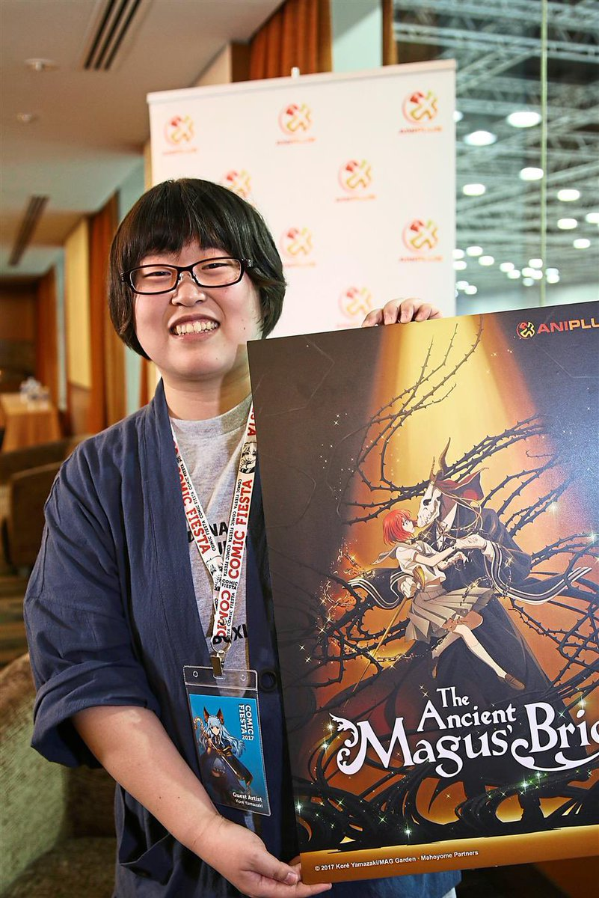

What is The Ancient Magus' Bride?

The Ancient Magus' Bride is a story about a girl named Chise and an ancient creature by the name of Elias. When Chise was just a kid, her parents passed away and after years of struggling due to her peculiarity and surrounded by hopelessness and dispair, she sold herself to slavery. She reamined enslaved for several years until Elias caught an interest in her due to her special characteristic of being a Sleigh Beggy (A type of magical being that absorbs infinite amounts of energy). Elias buys her at an auction and brings her to his home, in England. There, she becomes his apprentice and at the same time, his bride...
Who is Kore Yamazaki?

Kore Yamazaki is the creator of The Ancient Magus' Bride. She is Japanese and has published several manga under her name, including her most famous work, The Ancient Magus' Bride.
In case you want to learn more about the stuff I discussed above here's a link:The Ancient Magus' Bride Wiki
Home Page
About The Ancient Magus' Bride
The Golden Yarn Stories
My purpose on making this website